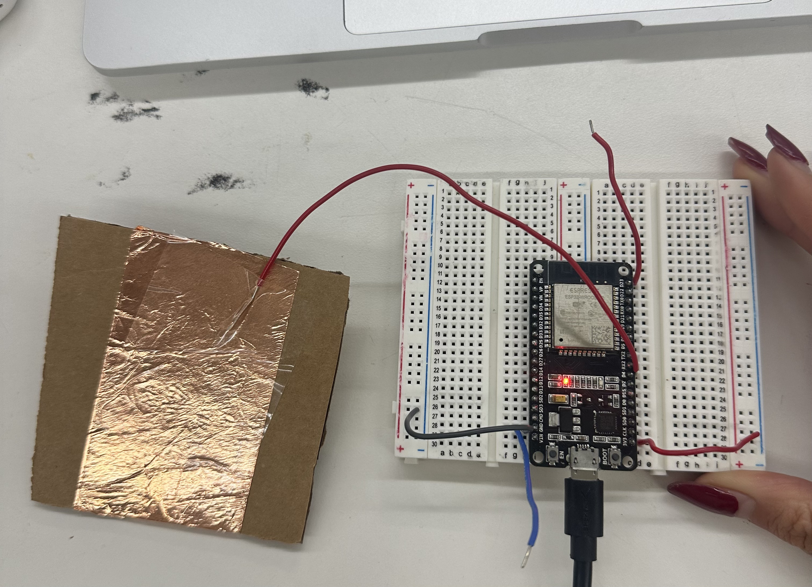
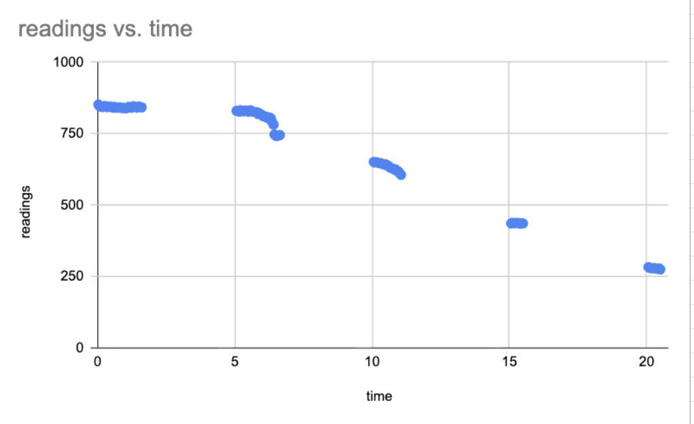
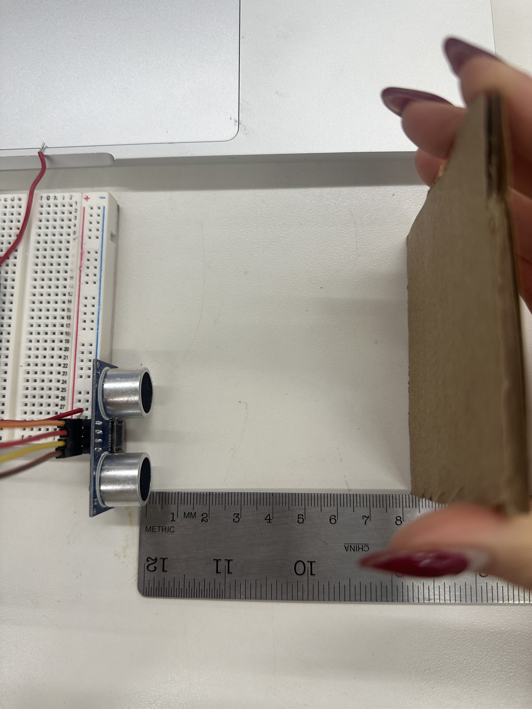
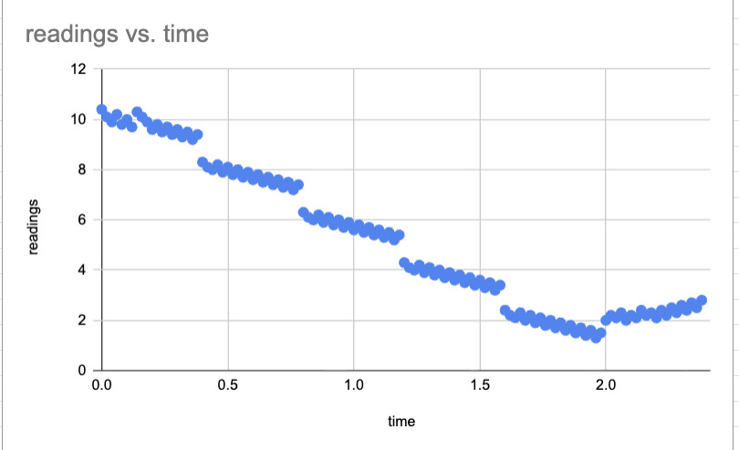

Sensors and Calibration
For this week’s assignment, I worked with electronic input devices by building and calibrating two sensors: a capacitive touch sensor and an ultrasonic distance sensor. The goal was to understand how raw sensor readings change with user interaction or distance and how these readings can be calibrated for meaningful interpretation.
Capacitive Sensor
 I calibrated the capacitive sensor by recording ADC values over time while interacting with the sensing surface at different levels of contact. The five calibration stages were no contact, hovering a finger, light press, firm press, and full palm contact. Baseline readings with no contact ranged from approximately 840–850. As contact increased, the sensor values decreased, reaching values near 0–20 during full palm contact. Some variability is present due to the subjective nature of manual pressing.
>Ultrasonic Distance Sensor
 I also built and calibrated an ultrasonic sensor to measure distance to a cardboard target. Measurements were taken at known separations of 2, 4, 6, 8, and 10 mm while recording distance values over time. The data show clear clustering around each distance, with measured values decreasing as the separation decreases. Small variations are present due to manual positioning of the cardboard along ruler ticks.
Additional Work
In preparation for the following week, I also created a CAD file for a frame that I plan to fabricate as a birthday gift for a friend. The fabrication process will be documented in the next assignment.